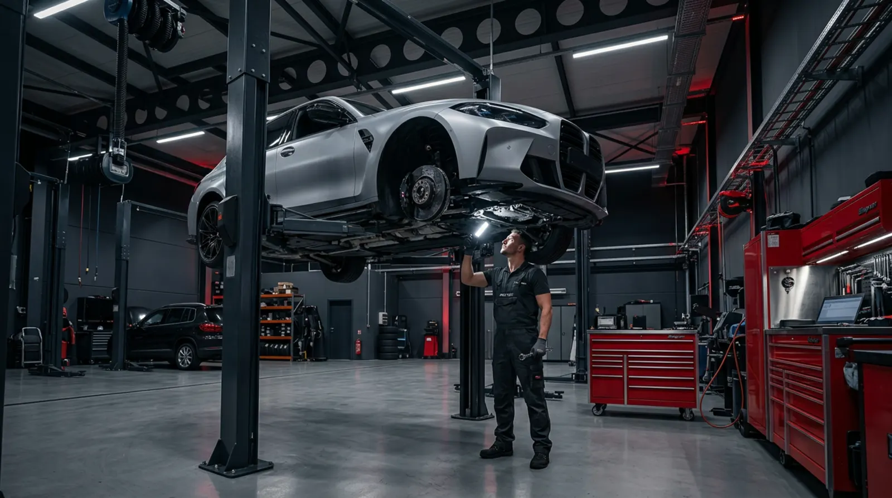
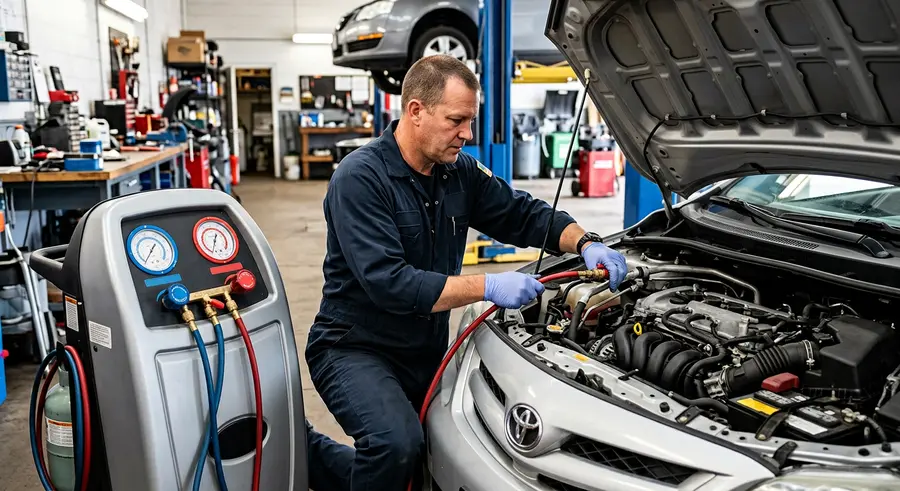
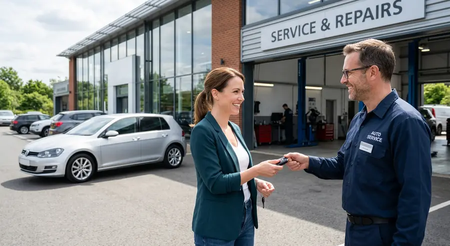
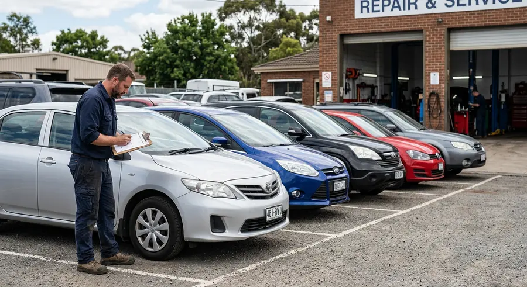
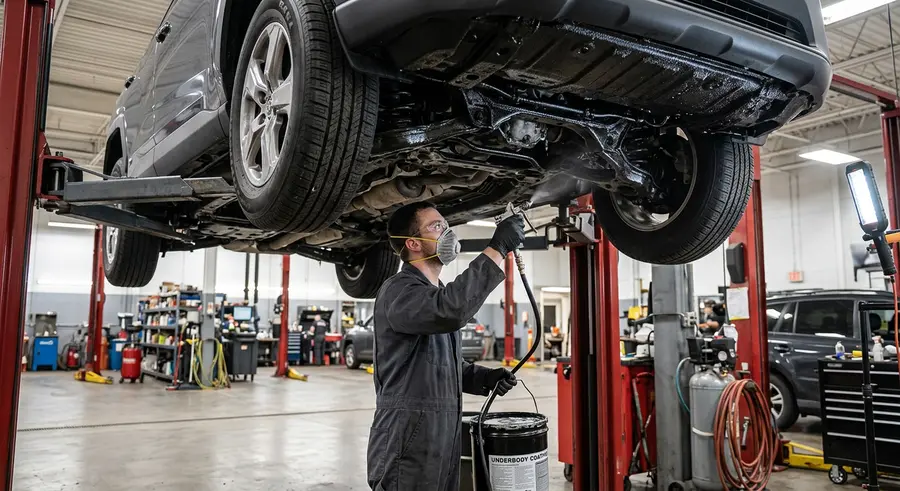

Serwis samochodowy · Szczecin
Masz problem z autem? Pomożemy.
Kompleksowy serwis samochodowy, blacharstwo i lakiernictwo. Zajmiemy się Twoim autem od diagnozy aż po odbiór gotowego samochodu.

Jak działamy
Prosty proces. Zadowolony klient.
Bez zbędnych formalności. Kontaktujesz się z nami, ustalamy zakres prac, a my zajmujemy się resztą.
-
01
Kontakt
Zadzwoń do nas i opowiedz, czego potrzebuje Twój samochód. Umówimy się na wizytę.
-
02
Diagnoza
Oglądamy samochód, oceniamy zakres naprawy i przedstawiamy Ci konkretne rozwiązanie.
-
03
Naprawa
Nasi fachowcy wykonują ustalone prace zgodnie ze sztuką i z dbałością o każdy detal.
-
04
Odbiór auta
Odbierasz sprawny i gotowy do drogi samochód. Prosto, konkretnie i bez niepotrzebnych komplikacji.
Zakres usług
Pomożemy również w innych sprawach
Świadczymy profesjonalne usługi. Wiedza poparta 30-letnim doświadczeniem pozwala nam zapewnić ich najwyższą jakość.

02 Klimatyzacja Serwisujemy klimatyzacje od ręki w każdego rodzaju pojazdach.
03 Auto zastępcze Na czas naprawy oferujemy auto zastępcze.
04 Skup pojazdów Chcesz sprzedać auto? Przyjedź, dogadamy się!
05 Konserwacja Przeprowadzamy pełną konserwację pojazdów.Kontakt
Znajdziesz nas tutaj.
Opowiedz nam, co dzieje się z samochodem. Ustalimy, co należy zrobić i umówimy dogodny termin wizyty.
Zadzwoń do nas 509 499 101Wolisz najpierw sprawdzić lokalizację? Zobacz mapę
-
01
Adres
ul. Sowińskiego 26, Szczecin
skrzyżowanie ulic Sowińskiego i Kusocińskiego -
02
Godziny otwarcia
Pon.–Pt.: 09:00 – 17:00
Sobota: 09:00 – 14:00 -
03
Telefony
91 812 11 92 · stacjonarny
509 499 101 · komórkowy